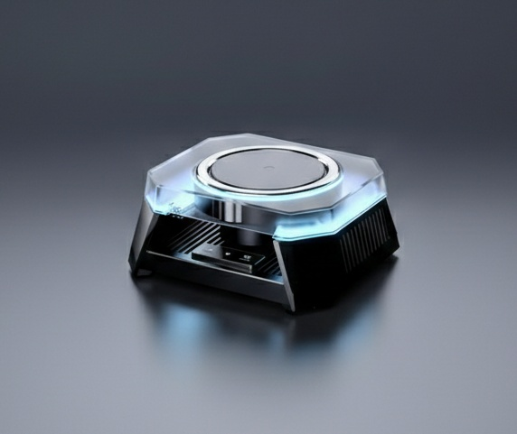
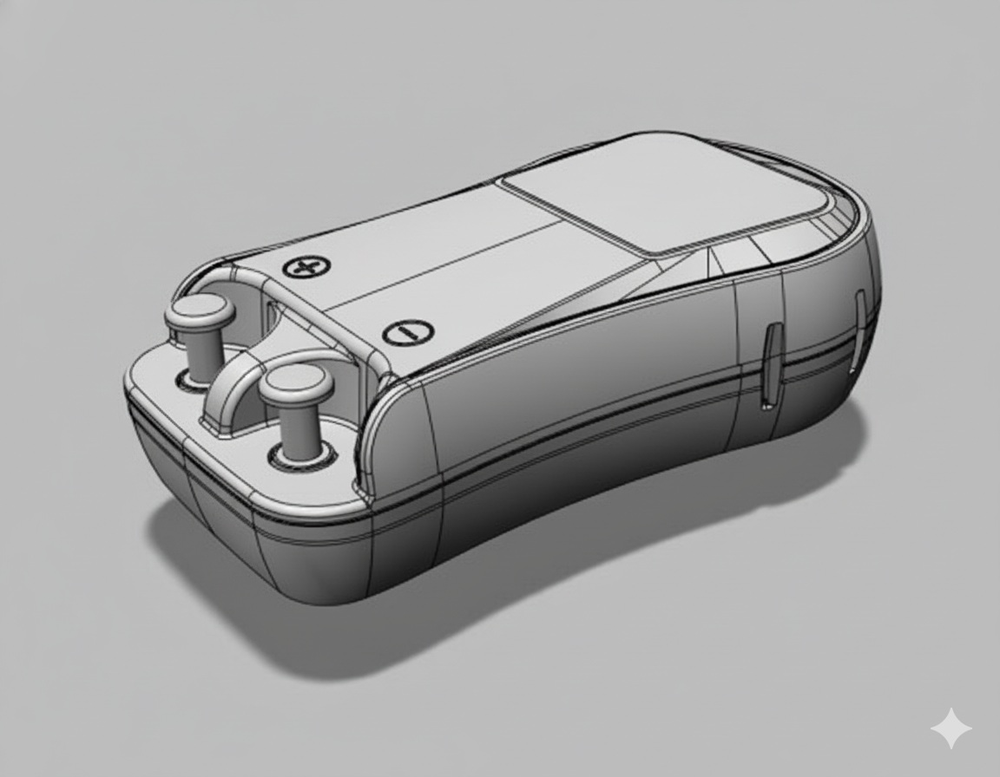

"제품 개발의 시작, 신성테크와 함께하십시오."
풍부한 현장 경험과 데이터 기반의 기술력으로 귀사의
성공적인 비즈니스를 강력히 지원합니다.
아이디어가 제품으로 탄생할 수 있도록, 검증된 기술력과 정밀 설계가 최적의 솔루션을 제안합니다.
풍부한 현장 경험과 데이터 기반의 독보적인 기술력으로 고객의 성공적인 비즈니스를 지원합니다.최적의 맞춤형 솔루션이 준비되어 있습니다.
고객의 성공을 위한 종합적인 기술 솔루션
단순 심미성을 넘어
제조
공정의 효율성을 고려한 기구 중심 디자인 기획.
소재 특성과 양산 환경 분석을 통해 금형 및 제작 비용을 절감하는 최적의 제품 구조 설계 서비스 제공.
심미성을 넘어 양산성까지 고려한 디자인.


2D/3D CAD를
활용한 정밀 메커니즘 설계 및 다각도 메커니즘 분석 및 간섭 시뮬레이션 최적화.
조립 편의성과 내구성을 고려한 구조 설계로 불량률을 최소화하고 제품의 신뢰성
확보.
조립 편의성을 고려한 설계로 신뢰성을 확보.
3D
프린팅(SLA/FDM) 및 CNC 정밀 가공을 활용한 공법별 맞춤형 워킹 목업 제작.
실제 양산 소재와 유사한 재질을 적용하여 디자인 및 양산 전 기능성 완벽
검증 및 리스크 최소화.
3D 프린팅 및 CNC 가공으로 워킹 목업 제작.
현장 요구사항에 맞춘
전용 자동화 설비 및 시스템 설계·제작.
반복 공정 자동화를 통해 생산 속도를 획기적으로 개선하고 인건비 절감 및 품질 균일화 실현.
맞춤형 기계로 생산성을 업, 인건비는 다운
단순 제작을 넘어, 최적의 솔루션을 제공합니다
풍부한 현장 경험과 데이터 기반의 기술력으로 귀사의
성공적인 비즈니스를 강력히 지원합니다.
아이디어가 제품으로 탄생할 수 있도록, 검증된 기술력과 정밀 설계가 최적의 솔루션을 제안합니다.
풍부한 현장 경험과 데이터 기반의 독보적인 기술력으로 고객의 성공적인 비즈니스를 지원합니다.최적의 맞춤형 솔루션이 준비되어 있습니다.